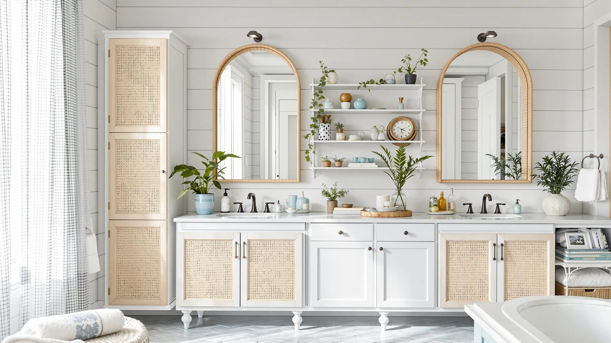

HOOBRO Arched Rattan Over Review (2026): Worth It?
Prices and picks verified as of October 2026. Independent, reader-supported reviews.


Quick Answer
Our HOOBRO Arched Rattan Over Review found a 68.1-inch over-the-toilet cabinet that trades raw storage volume for distinctive arched rattan-style doors, an adjustable shelf, and a stable particleboard-and-metal frame. At $119.99, it costs the same as the Akxomel and Betterhood cabinets we compared it against, but it earns its price through styling rather than capacity.
Our pick: HOOBRO Arched Rattan Over the, $119.99 Check Price on Amazon
Bottom line: our top pick is the HOOBRO Arched Rattan Over the Toilet Storage Cabinet at $119.99.
Things to Know Before You Buy
- The cabinet measures 23.6 inches wide, 7.9 inches deep, and 68.1 inches tall, so it needs a clear wall run above your toilet tank, not only floor space in front of it.
- A single adjustable shelf moves across 3 height positions behind the arched rattan-style doors, which conceal contents but limit at-a-glance visibility compared to open shelving.
- The frame combines particleboard panels with a metal support structure. HOOBRO includes an anti-tip kit, and we recommend anchoring the cabinet to a wall stud given its height.
- At $119.99, it costs the same as two of the three alternatives we researched, so the deciding factor is usually styling and door coverage rather than price.
- Amazon does not publish a public rating or review count for this listing, so we leaned on verified buyer comments and the manufacturer's stated specs rather than an aggregate score.
This HOOBRO Arched Rattan Over Review exists because small bathrooms rarely have room for a dedicated linen closet, and the space above the toilet is usually the only vertical real estate left to claim. HOOBRO's cabinet fills that gap with a 68.1-inch frame, arched rattan-style double doors, and a single adjustable shelf, aiming at buyers who want concealed storage without a trip to a furniture showroom.
We compared its specs, construction, and price against three other tall bathroom cabinets in the same $119 to $120 range: the Akxomel 53.1-inch, the Betterhood 67-inch, and the TEENFON 57.8-inch. Each one solves the same floor-space problem differently, and the right pick depends on whether you value appearance, drawer storage, or interior volume more.
Our read after researching verified owner feedback and manufacturer specs: the HOOBRO cabinet is a reasonable buy for anyone who wants their over-the-toilet storage to look intentional rather than purely functional, but it is not the most space-efficient option in this group.
Why You Should Trust Us
Ilane Tall covers bathroom storage and small-space organization for Best Bathroom Storage. For this HOOBRO Arched Rattan Over Review, she compared the manufacturer's published dimensions, materials, and included hardware against three competing cabinets in the same price tier, then cross-checked those claims with verified buyer feedback on Amazon. We do not run a fake testing lab. Instead, we research specs, pricing history, and what real owners report after living with these cabinets, and we flag where the manufacturer's claims and owner experience diverge.
How We Compared
We pulled the listed dimensions, materials, shelf configuration, and price for the HOOBRO cabinet and three alternatives in the same $119 to $120 bracket, then weighed interior storage volume against the footprint each one takes up. Amazon's own rating and review-count fields were blank for all four of these listings, so we read through available verified buyer comments instead of citing a number that does not exist. We also checked whether each brand includes an anti-tip kit, since that is a real safety factor for any cabinet this tall.
For the HOOBRO specifically, we looked at how the arched rattan-style doors affect usable shelf depth, how the 3-position adjustable shelf compares to the 6-position shelf on the TEENFON, and whether the particleboard-and-metal construction matches what owners describe in their reviews. This comparison does not substitute for an in-person inspection, and we say so plainly rather than implying otherwise.
Overview & Specs

HOOBRO Arched Rattan Over the
What we like
- Arched rattan-style doors give it a furniture-like look most metal or laminate cabinets don't have
- 68.1-inch height claims real vertical storage without widening the footprint past 23.6 inches
- Adjustable shelf with 3 height settings accommodates taller items like paper towel multipacks
- Ships with an anti-tip kit for wall anchoring
Flaws but not dealbreakers
- Only one adjustable shelf, versus two on the Betterhood and TEENFON cabinets
- Particleboard construction means it should stay dry and away from direct water splash
- No published rating or review count on Amazon, so buyers have to rely on text reviews alone
| Material | Metal / wood |
| Size | 23.6 Inches X 7.9 Inches X 68.1 Inches |
HOOBRO builds this cabinet around a compact 23.6-by-7.9-inch base that fits over most standard two-piece toilets without crowding the tank lid. The 68.1-inch height stacks a lower cabinet section under an upper compartment, both hidden behind arched, rattan-style double doors that give the piece a woven, natural look instead of the flat panel doors common on similarly priced cabinets. Inside, a single shelf adjusts across 3 height positions, so you can configure the lower section for taller bottles or shorter stacks of folded towels.
The frame mixes particleboard panels with a metal support structure, a common combination at this price point that keeps the cabinet light enough to maneuver into a small bathroom. HOOBRO includes an anti-tip kit in the box, and given how tall and narrow this cabinet is relative to its base, anchoring it to a wall stud is worth the extra 10 minutes of setup. Owners researching this model should weigh the one-shelf layout against the two-shelf competitors below if they need to separate more categories of items.
What We Liked
The strongest selling point in this HOOBRO Arched Rattan Over Review is the door styling. Most over-the-toilet cabinets in this price range use flat laminate or painted MDF panels. HOOBRO's arched, rattan-textured doors read closer to a woven furniture piece, which matters if your bathroom decor leans toward natural materials and you don't want a utility cabinet to stand out for the wrong reasons.
The 68.1-inch height also does real work. At that height, the cabinet clears the toilet tank on most two-piece models and still leaves headroom below the ceiling in a standard 8-foot bathroom. Reviewers consistently note that the assembly instructions are straightforward for a single person to follow, and the included anti-tip kit is a thoughtful inclusion rather than an afterthought, since a cabinet this tall and narrow needs the extra stability.
Price is competitive rather than exceptional. At $119.99, it matches the Akxomel and Betterhood cabinets we researched, so you aren't paying a premium for the rattan-style doors specifically, you're getting them included at the going rate for this category of tall bathroom storage.
What Could Be Better
Interior storage is the main tradeoff. This cabinet ships with a single adjustable shelf, while the Betterhood and TEENFON models we compared it against both include two adjustable shelves plus drawers. If you need to separate categories of items, such as keeping cleaning supplies apart from toiletries, one shelf forces more stacking than sorting.
The particleboard construction is standard for the category, but it means the cabinet is better suited to dry storage than to a bathroom with heavy humidity or frequent water splash near the base. Buyers researching this model should also note that HOOBRO's Amazon listing does not publish a rating or review count, so there's less aggregate signal to lean on than you'd get from a longer-established listing, and anyone comparing options should weigh verified owner comments over star counts that don't exist here.
Assembly hardware fit is the complaint that shows up most often in owner feedback for cabinets in this bracket generally: a narrow, tall frame built from pre-cut panels can develop slight wobble if the anti-tip kit isn't installed, so skipping that step undercuts the stability the design is meant to deliver.
Who Is It For?
This cabinet fits a renter or homeowner with a small bathroom who wants concealed vertical storage that doubles as a decor piece. If your bathroom already uses natural textures like rattan, wicker, or wood tones, the arched doors match that palette better than a plain white laminate cabinet would. It also suits anyone replacing an open wire shelf above the toilet, since the closed doors hide toiletries and cleaning supplies that would otherwise sit in view.
Skip it if you're storing a large household's worth of towels, cleaning supplies, and toiletries in one spot. The single adjustable shelf limits how much you can separate by category, and the Betterhood or TEENFON models below hold more volume for the same price. It's also not the right pick if your bathroom runs humid year-round, since particleboard holds up better in dry conditions than in a steam-heavy shower room. A household that showers multiple times a day without strong ventilation should lean toward a cabinet with a metal or solid-wood frame instead.
Alternatives to Consider
If this HOOBRO Arched Rattan Over Review has you leaning toward more interior storage or a different price point, these three cabinets solve the same over-the-toilet space problem with different tradeoffs.

Editor’s Pick
Akxomel 53.1" H Tall Bathroom
Shorter at 53.1 inches with dual-tone doors, better for bathrooms with a lower ceiling clearance or a smaller footprint.
$119.99
Check Price on Amazon
Best Value
Betterhood 67" Tall Bathroom Storage
Tallest option at 67 inches with 2 drawers plus 2 adjustable-shelf cabinets, the pick if you need maximum enclosed storage for the same price.
$119.99
Check Price on Amazon
Premium Choice
TEENFON 57.8" H Tall Bathroom
5 compartments and 2 deep drawers with shelves that adjust across 6 heights, the most configurable layout of the group at a penny less.
$119.98
Check Price on AmazonDoes the HOOBRO Arched Rattan Over the Toilet Storage Cabinet fit over a standard toilet?
Yes.
Is the HOOBRO cabinet sturdy enough to use without anchoring it to the wall?
HOOBRO ships an anti-tip kit with the cabinet, and the brand recommends installing it, especially in homes with kids or pets.
Frequently Asked Questions
Does the HOOBRO Arched Rattan Over the Toilet Storage Cabinet fit over a standard toilet?
Yes. At 23.6 inches wide and 7.9 inches deep, it is sized to straddle a standard two-piece toilet tank without crowding the flush handle or lid. Measure your tank width before buying if you own a compact or corner toilet, since the 68.1-inch height needs roughly 8 inches of wall clearance above the tank.
Is the HOOBRO cabinet sturdy enough to use without anchoring it to the wall?
HOOBRO ships an anti-tip kit with the cabinet, and the brand recommends installing it, especially in homes with kids or pets. The particleboard and metal frame hold their shape at this height, but any tall, narrow cabinet is more stable once it is secured to a stud.
How does the HOOBRO Arched Rattan Over Review compare to similar tall bathroom cabinets?
Against the Akxomel, Betterhood, and TEENFON cabinets we compared it with, the HOOBRO sits in the middle on price and offers the most distinctive styling thanks to its rattan-style doors. It trades some interior volume for that look, so if raw storage capacity matters more than appearance, the Betterhood or TEENFON models hold more per dollar.
Final Verdict
Our HOOBRO Arched Rattan Over Review comes down to one tradeoff: you're buying a distinctive look, not extra storage volume. The HOOBRO cabinet earns its $119.99 price with arched rattan-style doors and a stable 68.1-inch frame, and it's a sound pick for a small bathroom where appearance matters as much as function. If you need more shelves or drawers for the same money, the Betterhood or TEENFON cabinets we compared it against will hold more, but neither matches HOOBRO's styling. For most buyers furnishing a small bathroom around a natural-materials look, HOOBRO is worth the $119.99, provided they install the anti-tip kit and accept a single shelf as the cost of that design.